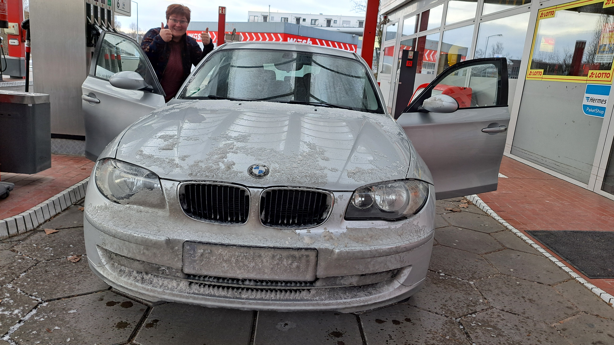
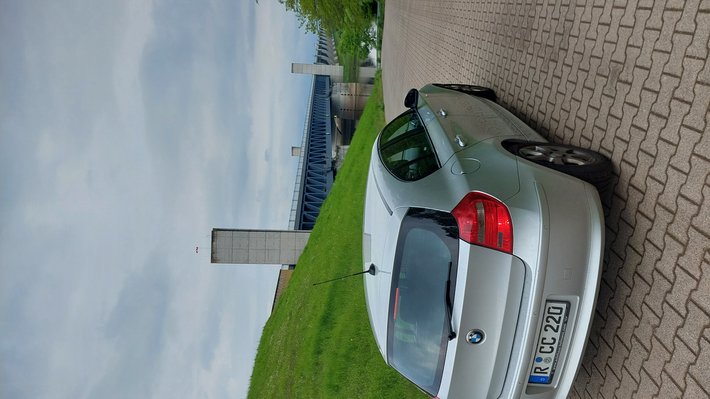

A note from a former owner
Meet Scotty.
This car meant a lot to me. I drove it for many years, gave it the nickname Scotty, and I still think about where it may be now. If you own this car now, or if you happen to see it somewhere in the world, a photo or short message would make me very happy.



Photo 1 placeholder
Add one of your favorite old photos here.
Add one of your favorite old photos here.
Photo 2 placeholder
Another memory of Scotty.
Another memory of Scotty.
Photo 3 placeholder
A road trip, a parking spot, or a detail shot.
A road trip, a parking spot, or a detail shot.
Photo 4 placeholder
Optional: replace or remove this block.
Optional: replace or remove this block.
Why this page exists
I recently sold this car, and I was told it may continue its journey abroad. That felt strange and beautiful at the same time. This page is simply a friendly invitation: if Scotty is still out there and you come across it, I would love to know.
No pressure, no obligation — just a small hello from a former owner who remembers this car fondly.
How to contact me
The easiest way is by email. You can send a current photo, a short note, or just tell me in which country Scotty is today.
Before you upload
- Replace the four photo placeholders with your own JPG or PNG images.
- Update the email link with your real address.
- If you want, add the car model, year, or country where you sold it.
- Then upload this file to Cloudflare Pages using “Upload your static files”.